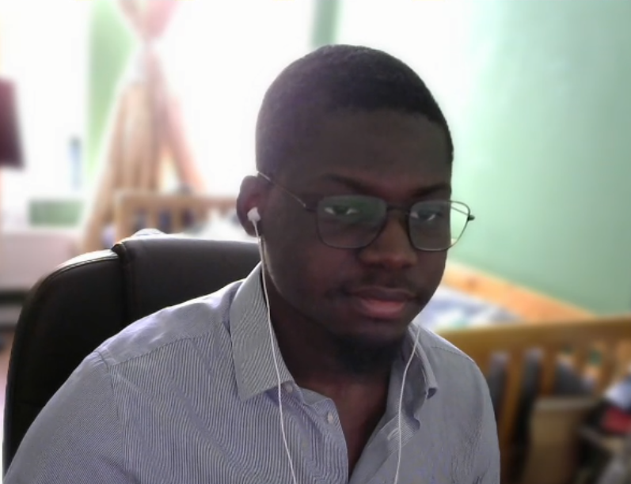

Welcome to my little zone c:
About me

Im a self-motivated, open minded and focused individual who is focused on usign the differnent knowledge gained throughout the years to solve emerging problems in the tech field. My strong points are my strong foundation in telecommunications, such as radar technologies, as well as microwave and millimetrewave technologies. I also have an interest in Machine Learning and in my spare time enjoy experimenting and creating and training models for differnt use cases, for example radar related data.
Here is a link to some of the work I've been doing